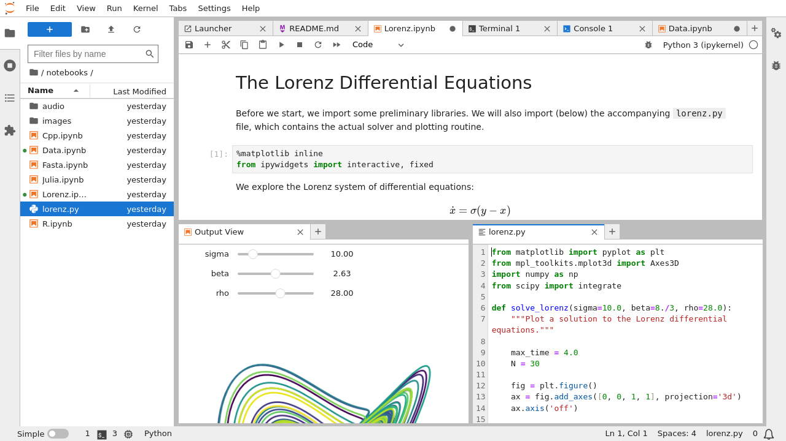

5. JupyterLab for Interactive Computing#
5.1. Introduction#
JupyterLab is an open-source, web-based integrated development environment (IDE) for notebooks, code, and data. It has a flexible and powerful interface for interactive computing, data analysis, and scientific computing. JupyterLab is a part of the Jupyter Project, which aims to provide a platform-agnostic, interactive computing experience. JupyterLab builds upon the functionality of traditional Jupyter notebooks by offering a more feature-rich environment for data scientists, researchers, and students.
5.2. Installing JupyterLab#
To Install JupyterLab, follow the steps below:
Using Pixi
$ pixi add jupyterlab
Note: You need to install JupyterLab in each environment that you need to use it.
5.3. Launching JupyterLab#
You can launch JupyterLab using the following command if you are using pixi:
$ pixi run jupyter lab
This will open a new tab in your web browser, displaying the JupyterLab interface.
Let’s look into what’s happening when you run JupyterLab. Behind the scene, JupyterLab runs a Jupyter server that is hosted on your computer and accessible through port 8888 (default) of localhost. After you run jupyter lab, several lines will be printed in your terminal which indicates the path to the Jupyter server on your machine, and the URL to access it. The URL has a format like this:
http://127.0.0.1:8888/lab?token=TOKEN
127.0.0.1 is the IP of your local host, 8888 is the port number, and TOKEN is a randomly generated string that is used to authenticate access to the notebook server. If JupyterLab doesn’t automatically open in your browser, you can copy the link from terminal and paste it in your browser. We will use this later on when we deploy JupyterLab inside a Docker container.


Fig. 5.1 JupyterLab interface (source: JupyterLab Documentation)#
5.4. JupyterLab Interface Overview#
Fig. 5.1 shows the latest JupyterLab interface at the time of this writing (Sep 2023). The interface has multiple sections:
Launcher
Launcher is a tab that contains shortcuts to launch a notebook, terminal, markdown file, python file, etc. You can access launcher under File or by clicking the large blue button on the top left of the screen.
File Browser
On the left-hand side of the interface, you’ll find the file browser, which allows you to navigate your file system and create, open, and manage notebooks and other files. The files and directories that you can access here are the ones that are located in the directory you launched JupyterLab from.
Tabs and Workspaces
JupyterLab supports multiple tabs, enabling you to work on multiple notebooks or files simultaneously. You can also organize your workspaces by creating customized layouts to suit your workflow.
Kernel
The kernel is responsible for executing code within a notebook. You can choose different kernels for different programming languages (e.g., Python, R, Julia) depending on your analysis needs. You can see all running kernels on the left had side by clicking on the kernels icon.
The JupyterLab documentation has detailed tutorials for The JupyterLab Interface, Managing Kernels and Terminals, Working with Terminals, Notebooks, Text Editor, and Working with Files.
5.5. JupyterLab Shortcuts#
There are several very useful and practical shortcuts for JupyterLab that improves your experience of working with it. You can see all of the default shortcuts after launching your JupyterLab by navigating to Settings>Advanced Setting Editor>Keyboard Shortcuts.
We will introduce some of the useful ones in the class.
5.6. Exercise#
In this exercise you will be working with a CSV file that contains labels for image chips. An image chip is a small portion of a larger satellite image for which the labels are valid for. A typical image chip is 256px by 256px. Each row in this CSV represents a single image chip’s metadata and contains the chip’s land cover types (as a list) and the datetime for which the label is valid.
Download the CSV file from here. The CSV has the following columns:
idas Integerlandcoveras String Arraydatetimein ISO 8601 Timestamp
You are asked to do the following in a Jupyter Notebook:
Load the CSV as a dataframe
Return the number of chips for chips with a datetime between
2017-01-01T00:00:00Zand2017-12-31T11:59:59ZPlot a Bar Chart visualizing the total number of chips for each hour of the day
Return a list of unique land cover types present in the CSV